import numpy as np
import pandas as pd
import matplotlib.pyplot as plt
import seaborn as sns
%matplotlib inline
color_pal = sns.color_palette('magma')
from sklearn.metrics import mean_squared_error
from sklearn.model_selection import TimeSeriesSplit
import xgboost as xgbForecasting Energy Consumption with XGBoost
Python
ML
Pandas
XGBoost
Time Series Forecasting
Informed by YouTube videos of Rob Mulla we use XGBoost to forecast energy consumption in the eastern US.
print("Python version:")
!python --versionPython version:
Python 3.11.4Data
The data can be downloaded here. According to the Kaggle page:
PJM Interconnection LLC (PJM) is a regional transmission organization (RTO) in the United States. It is part of the Eastern Interconnection grid operating an electric transmission system serving all or parts of Delaware, Illinois, Indiana, Kentucky, Maryland, Michigan, New Jersey, North Carolina, Ohio, Pennsylvania, Tennessee, Virginia, West Virginia, and the District of Columbia. The hourly power consumption data comes from PJM’s website and are in megawatts (MW).
df = pd.read_csv('PJME_hourly.csv')df.head()| Datetime | PJME_MW | |
|---|---|---|
| 0 | 2002-12-31 01:00:00 | 26498.0 |
| 1 | 2002-12-31 02:00:00 | 25147.0 |
| 2 | 2002-12-31 03:00:00 | 24574.0 |
| 3 | 2002-12-31 04:00:00 | 24393.0 |
| 4 | 2002-12-31 05:00:00 | 24860.0 |
df.info()<class 'pandas.core.frame.DataFrame'>
RangeIndex: 145366 entries, 0 to 145365
Data columns (total 2 columns):
# Column Non-Null Count Dtype
--- ------ -------------- -----
0 Datetime 145366 non-null object
1 PJME_MW 145366 non-null float64
dtypes: float64(1), object(1)
memory usage: 2.2+ MBdf.describe()| PJME_MW | |
|---|---|
| count | 145366.000000 |
| mean | 32080.222831 |
| std | 6464.012166 |
| min | 14544.000000 |
| 25% | 27573.000000 |
| 50% | 31421.000000 |
| 75% | 35650.000000 |
| max | 62009.000000 |
Use the ‘Datetime’ column as the dataframe index, and convert to the Datetime type
df = df.set_index('Datetime')
df.index = pd.to_datetime(df.index)df.info()<class 'pandas.core.frame.DataFrame'>
DatetimeIndex: 145366 entries, 2002-12-31 01:00:00 to 2018-01-02 00:00:00
Data columns (total 1 columns):
# Column Non-Null Count Dtype
--- ------ -------------- -----
0 PJME_MW 145366 non-null float64
dtypes: float64(1)
memory usage: 2.2 MBdf.head()| PJME_MW | |
|---|---|
| Datetime | |
| 2002-12-31 01:00:00 | 26498.0 |
| 2002-12-31 02:00:00 | 25147.0 |
| 2002-12-31 03:00:00 | 24574.0 |
| 2002-12-31 04:00:00 | 24393.0 |
| 2002-12-31 05:00:00 | 24860.0 |
df.plot(style='.',
figsize=(15, 5),
color=color_pal[0],
title='PJME Energy Use in MW')
plt.ylabel('Energy Consumption (MW)')Text(0, 0.5, 'Energy Consumption (MW)')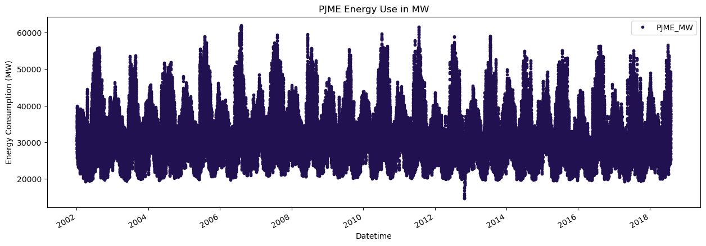
Periodic Trends
week = df.loc[(df.index >'01-01-2010') & (df.index < '01-08-2010')]
fig, ax = plt.subplots(figsize=(10, 6))
sns.lineplot(data=week, ax=ax)
plt.title('One Week of Data (01-01-2010 to 01-08-2010)', fontsize=18)
plt.ylabel('Energy Consumption (MW)', fontsize=14)
plt.xticks(rotation=45)
plt.grid(True)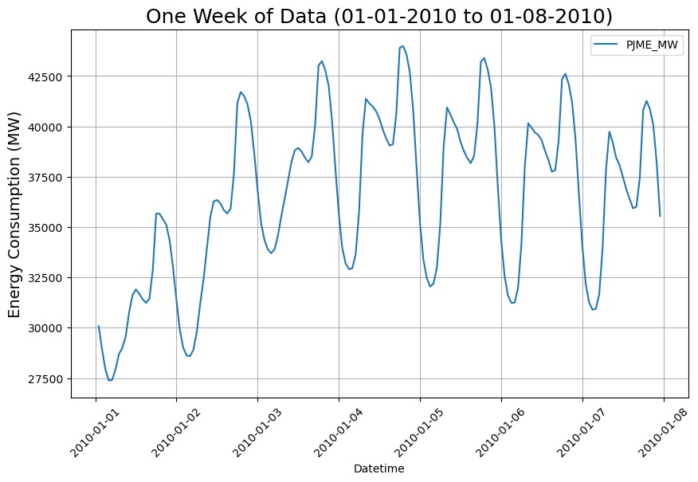
selected_date = '01-01-2010'
selected_day = df.loc[selected_date]
fig, ax = plt.subplots(figsize=(10, 6))
sns.lineplot(data=selected_day, ax=ax)
plt.title(f'One Day of Data ({selected_date})', fontsize=18)
plt.xlabel('Time', fontsize=14)
plt.ylabel('Energy Consumption (MW)', fontsize=14)
plt.xticks(rotation=45)
plt.grid(True)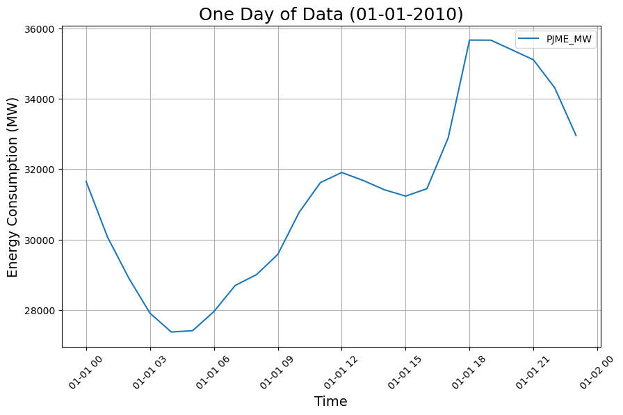
One might worry that new year’s day might not be a typical day for energy consumption.
Repeating this plot for the first of February:
selected_date = '01-02-2010'
selected_day = df.loc[selected_date]
fig, ax = plt.subplots(figsize=(10, 6))
sns.lineplot(data=selected_day, ax=ax)
plt.title(f'One Day of Data ({selected_date})', fontsize=18)
plt.xlabel('Time', fontsize=14)
plt.ylabel('Energy Consumption (MW)', fontsize=14)
plt.xticks(rotation=45)
plt.grid(True)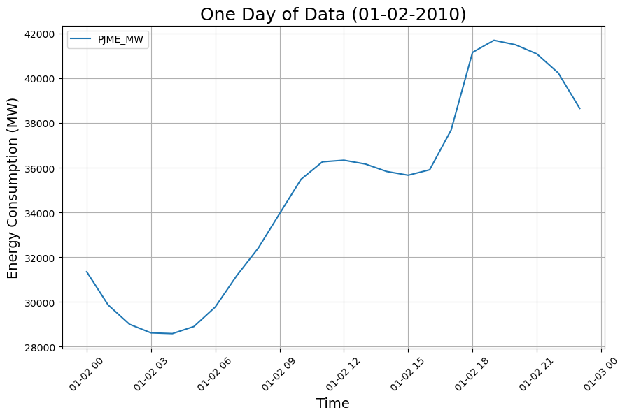
It seems that the daily trend seems to be the same.
To be sure, we repeat this plot once more for four randomly chosen dates in 2005-2010:
start_date = '01-01-2005'
end_date = '12-31-2010'
date_range = pd.date_range(start=start_date, end=end_date)
fig, axs = plt.subplots(2, 2, figsize=(12, 10), gridspec_kw={'hspace': 0.5})
axs = axs.flatten()
colors = ['#FFB6C1', '#87CEFA', '#98FB98', '#FFD700']
for i in range(4):
# Choose a random day
random_date = pd.to_datetime(np.random.choice(date_range))
day_data = df[df.index.date == random_date.date()]
# Create a subplot
ax = axs[i]
sns.lineplot(data=day_data, ax=ax, palette=[colors[i]])
ax.set_title(f'{random_date.date()}', fontsize=14)
ax.set_xlabel('Time', fontsize=12)
ax.set_ylabel('Energy Consumption (MW)', fontsize=12)
ax.tick_params(axis='x', rotation=45)
ax.grid(True)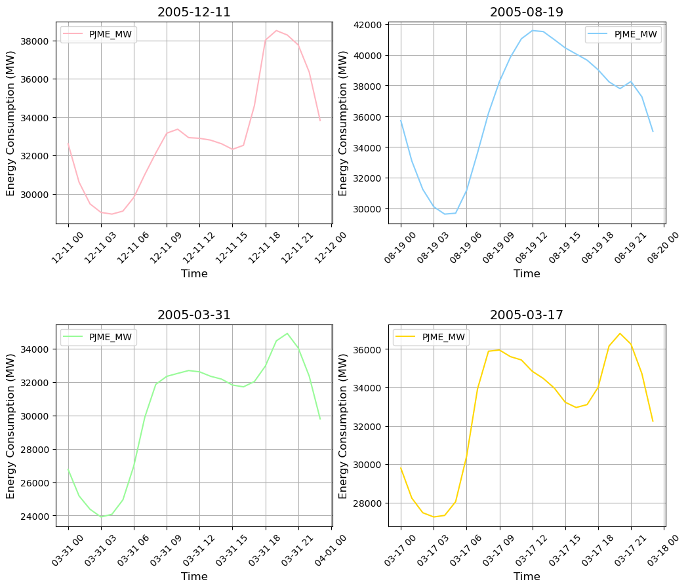
Unsuprisingly, the time of year seems to have a significant impact on daily energy consumption patterns.
The very general trend of less energy consumption at night compared with in the day seems however to persist across the year.
Creating another 2x2 grid, this time plotting the energy consumption across random weeks in 2005-2010:
start_date = '01-01-2005'
end_date = '12-31-2010'
date_range = pd.date_range(start=start_date, end=end_date)
fig, axs = plt.subplots(2, 2, figsize=(12, 10), gridspec_kw={'hspace': 0.5})
axs = axs.flatten()
colors = ['#FFB6C1', '#87CEFA', '#98FB98', '#FFD700']
for i in range(4):
# Choose a random week
random_start_date = pd.to_datetime(np.random.choice(date_range))
start_date = random_start_date
end_date = start_date + pd.DateOffset(days=7)
week_data = df.loc[(df.index >= start_date) & (df.index < end_date)]
# Create a subplot
ax = axs[i]
sns.lineplot(data=week_data, ax=ax, palette=[colors[i]])
week_year_string = start_date.strftime('Week %U, %Y')
ax.set_title(f'{week_year_string}', fontsize=14)
ax.set_xlabel('Time', fontsize=12)
ax.set_ylabel('Energy Consumption (MW)', fontsize=12)
ax.tick_params(axis='x', rotation=45)
ax.grid(True)
plt.savefig('header.png')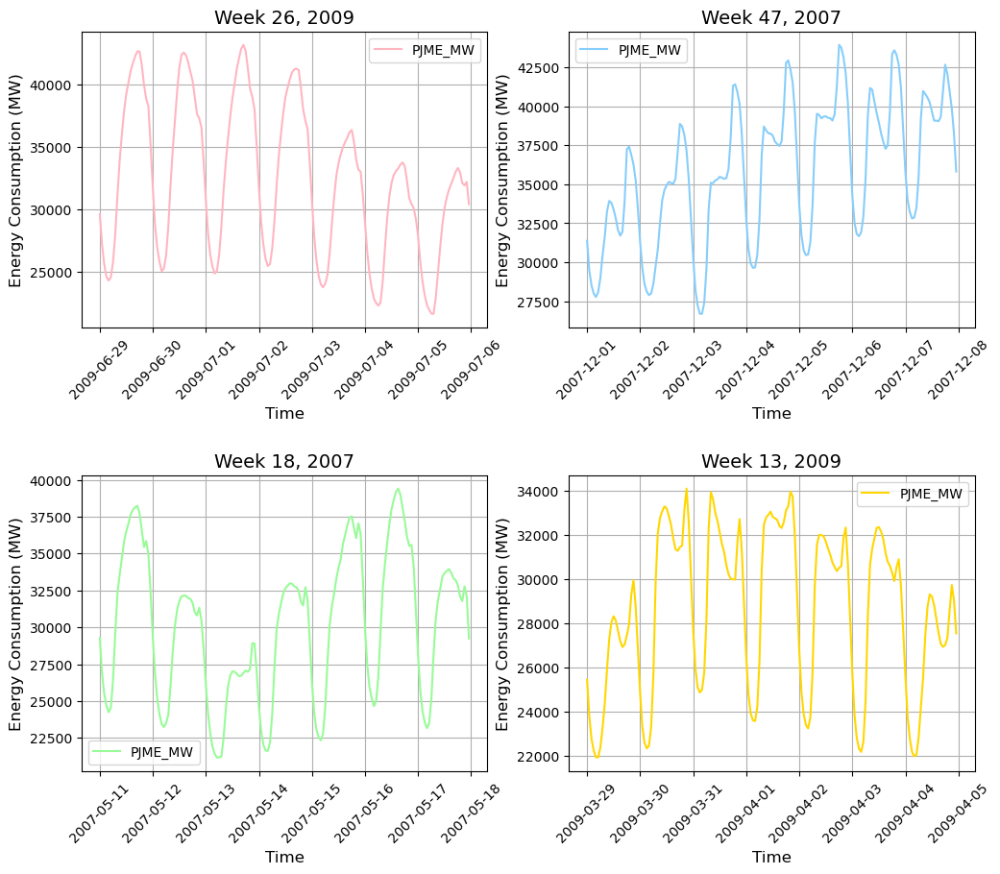
Outlier Analysis and Removal
df['PJME_MW'].plot(kind='hist',
bins=500,
color=color_pal[1])
plt.xlabel('Energy Consumption (MW)')Text(0.5, 0, 'Energy Consumption (MW)')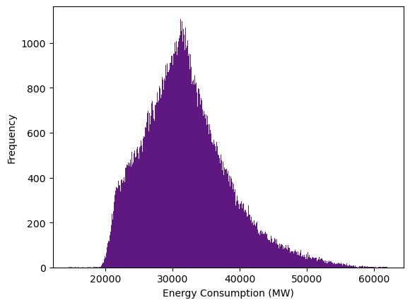
df.query('PJME_MW < 20_000').plot(figsize=(15,5),
style='x',
color='r')<Axes: xlabel='Datetime'>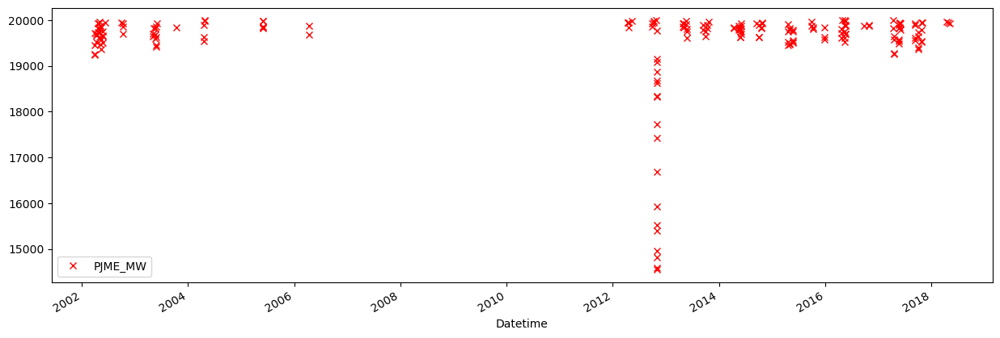
The data points sitting signficantly below 20,000 in 2013 seem to be highly suspect.
Lower the query threshold to 19,00 in an attempt to isolate these points:
df.query('PJME_MW < 19_000').plot(figsize=(15,5),
style='x',
color='r')<Axes: xlabel='Datetime'>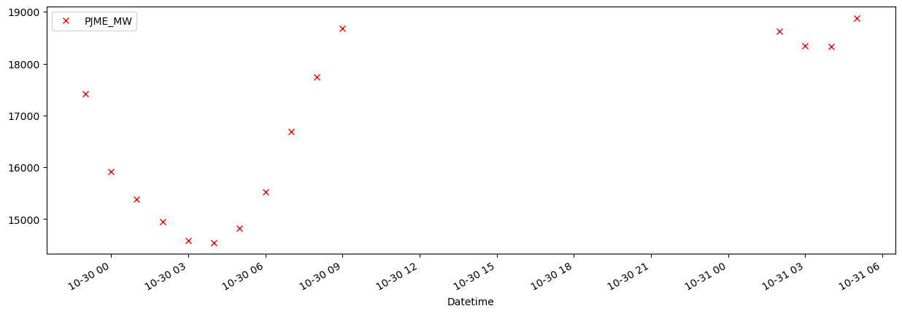
We’ve successfully isolated these outliers, now filtering them out:
df = df.query('PJME_MW >= 19_000').copy()len(df.query('PJME_MW < 19_000'))0Feature Creation
def create_features(df):
'''
Create time series features using pd DateTime object methods on dataframe index
'''
df = df.copy()
df['hour'] = df.index.hour
df['dayofweek'] = df.index.dayofweek
df['quarter'] = df.index.quarter
df['month'] = df.index.month
df['year'] = df.index.year
df['dayofyear'] = df.index.dayofyear
return dfdf = create_features(df)df| PJME_MW | hour | dayofweek | quarter | month | year | dayofyear | |
|---|---|---|---|---|---|---|---|
| Datetime | |||||||
| 2002-12-31 01:00:00 | 26498.0 | 1 | 1 | 4 | 12 | 2002 | 365 |
| 2002-12-31 02:00:00 | 25147.0 | 2 | 1 | 4 | 12 | 2002 | 365 |
| 2002-12-31 03:00:00 | 24574.0 | 3 | 1 | 4 | 12 | 2002 | 365 |
| 2002-12-31 04:00:00 | 24393.0 | 4 | 1 | 4 | 12 | 2002 | 365 |
| 2002-12-31 05:00:00 | 24860.0 | 5 | 1 | 4 | 12 | 2002 | 365 |
| ... | ... | ... | ... | ... | ... | ... | ... |
| 2018-01-01 20:00:00 | 44284.0 | 20 | 0 | 1 | 1 | 2018 | 1 |
| 2018-01-01 21:00:00 | 43751.0 | 21 | 0 | 1 | 1 | 2018 | 1 |
| 2018-01-01 22:00:00 | 42402.0 | 22 | 0 | 1 | 1 | 2018 | 1 |
| 2018-01-01 23:00:00 | 40164.0 | 23 | 0 | 1 | 1 | 2018 | 1 |
| 2018-01-02 00:00:00 | 38608.0 | 0 | 1 | 1 | 1 | 2018 | 2 |
145351 rows × 7 columns
Lag Features
def add_lags(df):
target_map = df['PJME_MW'].to_dict()
df['lag1'] = (df.index - pd.Timedelta('364 days')).map(target_map)
df['lag2'] = (df.index - pd.Timedelta('728 days')).map(target_map)
df['lag3'] = (df.index - pd.Timedelta('1092 days')).map(target_map)
return dfdf = add_lags(df)df| PJME_MW | hour | dayofweek | quarter | month | year | dayofyear | lag1 | lag2 | lag3 | |
|---|---|---|---|---|---|---|---|---|---|---|
| Datetime | ||||||||||
| 2002-12-31 01:00:00 | 26498.0 | 1 | 1 | 4 | 12 | 2002 | 365 | 30393.0 | NaN | NaN |
| 2002-12-31 02:00:00 | 25147.0 | 2 | 1 | 4 | 12 | 2002 | 365 | 29265.0 | NaN | NaN |
| 2002-12-31 03:00:00 | 24574.0 | 3 | 1 | 4 | 12 | 2002 | 365 | 28357.0 | NaN | NaN |
| 2002-12-31 04:00:00 | 24393.0 | 4 | 1 | 4 | 12 | 2002 | 365 | 27899.0 | NaN | NaN |
| 2002-12-31 05:00:00 | 24860.0 | 5 | 1 | 4 | 12 | 2002 | 365 | 28057.0 | NaN | NaN |
| ... | ... | ... | ... | ... | ... | ... | ... | ... | ... | ... |
| 2018-01-01 20:00:00 | 44284.0 | 20 | 0 | 1 | 1 | 2018 | 1 | 34600.0 | 41772.0 | 40740.0 |
| 2018-01-01 21:00:00 | 43751.0 | 21 | 0 | 1 | 1 | 2018 | 1 | 33674.0 | 41393.0 | 40049.0 |
| 2018-01-01 22:00:00 | 42402.0 | 22 | 0 | 1 | 1 | 2018 | 1 | 32035.0 | 40092.0 | 38473.0 |
| 2018-01-01 23:00:00 | 40164.0 | 23 | 0 | 1 | 1 | 2018 | 1 | 29870.0 | 37911.0 | 35962.0 |
| 2018-01-02 00:00:00 | 38608.0 | 0 | 1 | 1 | 1 | 2018 | 2 | 27771.0 | 35931.0 | 33680.0 |
145351 rows × 10 columns
Visualising Feature/Target Relationships
fig, ax = plt.subplots(figsize=(10,8))
sns.boxplot(data=df, x='hour', y='PJME_MW', palette='magma')
ax.set_title('Energy Consumption (MW) by Hour')
plt.grid(True)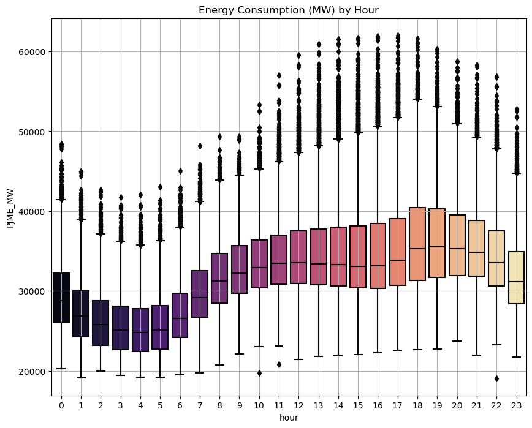
fig, ax = plt.subplots(figsize=(10,8))
sns.boxplot(data=df, x='month', y='PJME_MW', palette='coolwarm')
ax.set_title('Energy Consumption (MW) by Month')
plt.grid(True)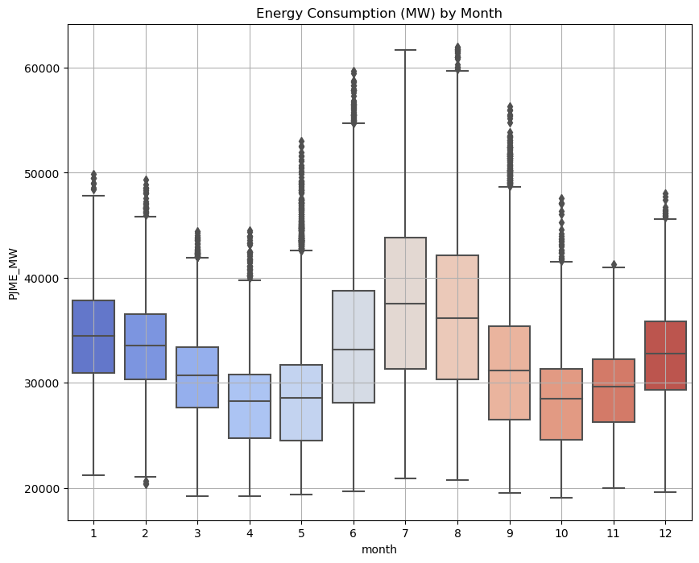
Train/Test Split
We reserve the data from 2015 and beyond as a test set, and use the data before 2015 as a training set. The following code produces an illustration to help explain this.
train = df.loc[df.index < '01-01-2015']['PJME_MW']
test = df.loc[df.index >= '01-01-2015']['PJME_MW']
fig, ax = plt.subplots(figsize=(15, 5))
train.plot(ax=ax,
label='Training Set',
title='Data Train/Test Split',
color=color_pal[3])
test.plot(ax=ax,
label='Test Set',
color=color_pal[0])
ax.axvline('01-01-2015', color='black', ls='--')
ax.legend(['Training Set', 'Test Set'])
plt.ylabel('Energy Consumption (MW)')Text(0, 0.5, 'Energy Consumption (MW)')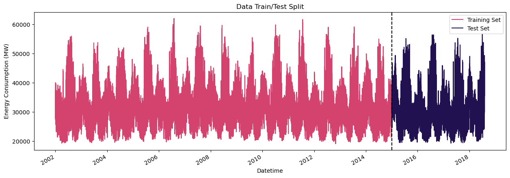
Aside - Time Series Cross Validation
To implement cross-validation while training a model on time series data, one can use TimeSeriesSplit from sklearn.
tss = TimeSeriesSplit(n_splits=5, test_size=24*365*1, gap=24)
df = df.sort_index()The following code produces a visualisation to illustrate how the data is structured into a training set and a test set during 5-fold time series cross-validation.
fig, axs = plt.subplots(5, 1, figsize=(15, 15), sharex=True)
fold = 0
for train_idx, val_idx in tss.split(df):
train = df.iloc[train_idx]
test = df.iloc[val_idx]
train['PJME_MW'].plot(ax=axs[fold],
label='Training Set',
title=f'Data Train/Test Split Fold {fold}',
color=color_pal[3])
test['PJME_MW'].plot(ax=axs[fold],
label='Test Set',
color=color_pal[0])
axs[fold].axvline(test.index.min(), color='black', ls='--')
fold += 1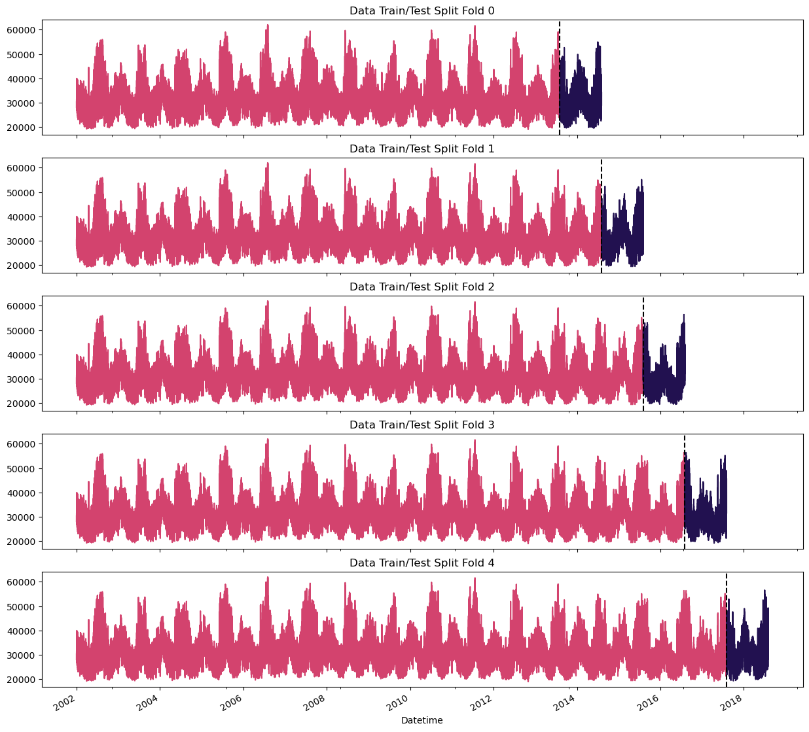
Training using Cross-Validation
The following code trains an XGBRegressor on each of the above 5 folds, saving the score (RMSE) in a list scores.
fold = 0
preds = []
scores = []
for train_idx, val_idx in tss.split(df):
train = df.iloc[train_idx]
test = df.iloc[val_idx]
train = create_features(train)
test = create_features(test)
FEATURES = ['dayofyear', 'hour', 'dayofweek', 'quarter', 'month','year', 'lag1', 'lag2', 'lag3']
TARGET = 'PJME_MW'
X_train = train[FEATURES]
y_train = train[TARGET]
X_test = test[FEATURES]
y_test = test[TARGET]
reg = xgb.XGBRegressor(base_score=0.5,
booster='gbtree',
n_estimators=1000,
early_stopping_rounds=50,
objective='reg:squarederror',
max_depth=3,
learning_rate=0.01)
reg.fit(X_train,
y_train,
eval_set=[(X_train, y_train), (X_test, y_test)],
verbose=100)
y_pred = reg.predict(X_test)
preds.append(y_pred)
score = np.sqrt(mean_squared_error(y_test, y_pred))
scores.append(score)[0] validation_0-rmse:32732.50147 validation_1-rmse:31956.66494
[100] validation_0-rmse:12532.10915 validation_1-rmse:11906.70125
[200] validation_0-rmse:5739.78666 validation_1-rmse:5352.86754
[300] validation_0-rmse:3868.29390 validation_1-rmse:3891.32148
[400] validation_0-rmse:3428.85875 validation_1-rmse:3753.95996
[456] validation_0-rmse:3349.18480 validation_1-rmse:3761.64093
[0] validation_0-rmse:32672.16154 validation_1-rmse:32138.88680
[100] validation_0-rmse:12513.25338 validation_1-rmse:12222.97626
[200] validation_0-rmse:5755.14393 validation_1-rmse:5649.54800
[300] validation_0-rmse:3909.18294 validation_1-rmse:3930.98277
[400] validation_0-rmse:3477.91771 validation_1-rmse:3603.77859
[500] validation_0-rmse:3356.63775 validation_1-rmse:3534.18452
[600] validation_0-rmse:3299.24378 validation_1-rmse:3495.69013
[700] validation_0-rmse:3258.86466 validation_1-rmse:3470.24780
[800] validation_0-rmse:3222.68998 validation_1-rmse:3446.36557
[900] validation_0-rmse:3195.04645 validation_1-rmse:3438.00845
[999] validation_0-rmse:3169.68251 validation_1-rmse:3434.35289
[0] validation_0-rmse:32631.19070 validation_1-rmse:31073.24659
[100] validation_0-rmse:12498.56469 validation_1-rmse:11133.47932
[200] validation_0-rmse:5749.48268 validation_1-rmse:4812.56835
[300] validation_0-rmse:3915.69493 validation_1-rmse:3552.97165
[400] validation_0-rmse:3493.17887 validation_1-rmse:3492.55244
[415] validation_0-rmse:3467.76622 validation_1-rmse:3500.17489
[0] validation_0-rmse:32528.44140 validation_1-rmse:31475.37803
[100] validation_0-rmse:12461.95683 validation_1-rmse:12016.24890
[200] validation_0-rmse:5736.08201 validation_1-rmse:5800.02075
[300] validation_0-rmse:3913.36576 validation_1-rmse:4388.02984
[400] validation_0-rmse:3495.35688 validation_1-rmse:4177.05330
[500] validation_0-rmse:3380.70922 validation_1-rmse:4123.43863
[600] validation_0-rmse:3321.42955 validation_1-rmse:4110.84393
[700] validation_0-rmse:3280.93068 validation_1-rmse:4096.40531
[800] validation_0-rmse:3249.14336 validation_1-rmse:4095.30547
[809] validation_0-rmse:3246.14826 validation_1-rmse:4094.38398
[0] validation_0-rmse:32462.05402 validation_1-rmse:31463.86930
[100] validation_0-rmse:12445.22753 validation_1-rmse:11954.79556
[200] validation_0-rmse:5750.85887 validation_1-rmse:5616.16472
[300] validation_0-rmse:3949.92308 validation_1-rmse:4154.55799
[400] validation_0-rmse:3538.33857 validation_1-rmse:3996.70155
[448] validation_0-rmse:3471.50174 validation_1-rmse:4005.60241scores[3753.2775219986684,
3434.3528874818867,
3475.9138463312997,
4093.3608331481823,
3996.298054855067]print(f'Mean score across folds: {np.mean(scores):0.4f}')
print(f'Fold scores:\n{scores}')Mean score across folds: 3750.6406
Fold scores:
[3753.2775219986684, 3434.3528874818867, 3475.9138463312997, 4093.3608331481823, 3996.298054855067]Predicting on Test Set
Fitting an XGBRegressor
model = xgb.XGBRegressor(base_score=0.5,
booster='gbtree',
n_estimators=1000,
early_stopping_rounds=50,
objective='reg:squarederror',
max_depth=3,
learning_rate=0.01)model.fit(X_train,
y_train,
eval_set=[(X_train,y_train),(X_test,y_test)],
verbose=100)[0] validation_0-rmse:32462.05402 validation_1-rmse:31463.86930
[100] validation_0-rmse:12445.22753 validation_1-rmse:11954.79556
[200] validation_0-rmse:5750.85887 validation_1-rmse:5616.16472
[300] validation_0-rmse:3949.92308 validation_1-rmse:4154.55799
[400] validation_0-rmse:3538.33857 validation_1-rmse:3996.70155
[447] validation_0-rmse:3472.46884 validation_1-rmse:4004.66554XGBRegressor(base_score=0.5, booster='gbtree', callbacks=None,
colsample_bylevel=None, colsample_bynode=None,
colsample_bytree=None, early_stopping_rounds=50,
enable_categorical=False, eval_metric=None, feature_types=None,
gamma=None, gpu_id=None, grow_policy=None, importance_type=None,
interaction_constraints=None, learning_rate=0.01, max_bin=None,
max_cat_threshold=None, max_cat_to_onehot=None,
max_delta_step=None, max_depth=3, max_leaves=None,
min_child_weight=None, missing=nan, monotone_constraints=None,
n_estimators=1000, n_jobs=None, num_parallel_tree=None,
predictor=None, random_state=None, ...)In a Jupyter environment, please rerun this cell to show the HTML representation or trust the notebook. On GitHub, the HTML representation is unable to render, please try loading this page with nbviewer.org.
XGBRegressor(base_score=0.5, booster='gbtree', callbacks=None,
colsample_bylevel=None, colsample_bynode=None,
colsample_bytree=None, early_stopping_rounds=50,
enable_categorical=False, eval_metric=None, feature_types=None,
gamma=None, gpu_id=None, grow_policy=None, importance_type=None,
interaction_constraints=None, learning_rate=0.01, max_bin=None,
max_cat_threshold=None, max_cat_to_onehot=None,
max_delta_step=None, max_depth=3, max_leaves=None,
min_child_weight=None, missing=nan, monotone_constraints=None,
n_estimators=1000, n_jobs=None, num_parallel_tree=None,
predictor=None, random_state=None, ...)Feature Importances
fi = pd.DataFrame(data=model.feature_importances_,
index=model.feature_names_in_,
columns=['Importance'])fi.sort_values('Importance').plot(kind='barh',title='Feature Importance',color='blue',legend=False)<Axes: title={'center': 'Feature Importance'}>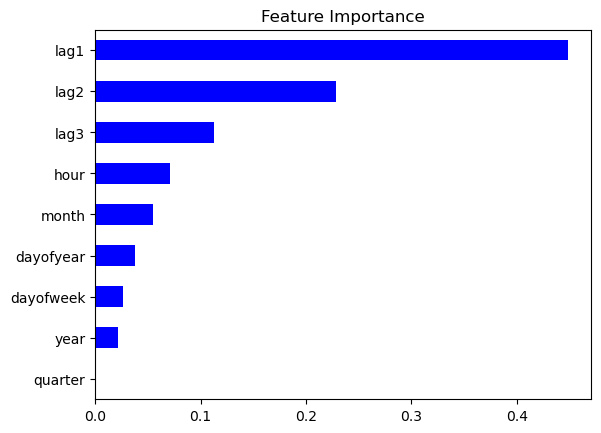
Predictions
train| PJME_MW | hour | dayofweek | quarter | month | year | dayofyear | lag1 | lag2 | lag3 | |
|---|---|---|---|---|---|---|---|---|---|---|
| Datetime | ||||||||||
| 2002-01-01 01:00:00 | 30393.0 | 1 | 1 | 1 | 1 | 2002 | 1 | NaN | NaN | NaN |
| 2002-01-01 02:00:00 | 29265.0 | 2 | 1 | 1 | 1 | 2002 | 1 | NaN | NaN | NaN |
| 2002-01-01 03:00:00 | 28357.0 | 3 | 1 | 1 | 1 | 2002 | 1 | NaN | NaN | NaN |
| 2002-01-01 04:00:00 | 27899.0 | 4 | 1 | 1 | 1 | 2002 | 1 | NaN | NaN | NaN |
| 2002-01-01 05:00:00 | 28057.0 | 5 | 1 | 1 | 1 | 2002 | 1 | NaN | NaN | NaN |
| ... | ... | ... | ... | ... | ... | ... | ... | ... | ... | ... |
| 2017-08-01 20:00:00 | 45090.0 | 20 | 1 | 3 | 8 | 2017 | 213 | 41056.0 | 46225.0 | 43934.0 |
| 2017-08-01 21:00:00 | 43843.0 | 21 | 1 | 3 | 8 | 2017 | 213 | 40151.0 | 44510.0 | 42848.0 |
| 2017-08-01 22:00:00 | 41850.0 | 22 | 1 | 3 | 8 | 2017 | 213 | 38662.0 | 42467.0 | 40861.0 |
| 2017-08-01 23:00:00 | 38473.0 | 23 | 1 | 3 | 8 | 2017 | 213 | 35583.0 | 38646.0 | 37361.0 |
| 2017-08-02 00:00:00 | 35126.0 | 0 | 2 | 3 | 8 | 2017 | 214 | 32181.0 | 34829.0 | 33743.0 |
136567 rows × 10 columns
test| PJME_MW | hour | dayofweek | quarter | month | year | dayofyear | lag1 | lag2 | lag3 | |
|---|---|---|---|---|---|---|---|---|---|---|
| Datetime | ||||||||||
| 2017-08-03 01:00:00 | 29189.0 | 1 | 3 | 3 | 8 | 2017 | 215 | 28809.0 | 29952.0 | 28465.0 |
| 2017-08-03 02:00:00 | 27584.0 | 2 | 3 | 3 | 8 | 2017 | 215 | 27039.0 | 27934.0 | 26712.0 |
| 2017-08-03 03:00:00 | 26544.0 | 3 | 3 | 3 | 8 | 2017 | 215 | 25881.0 | 26659.0 | 25547.0 |
| 2017-08-03 04:00:00 | 26012.0 | 4 | 3 | 3 | 8 | 2017 | 215 | 25300.0 | 25846.0 | 24825.0 |
| 2017-08-03 05:00:00 | 26187.0 | 5 | 3 | 3 | 8 | 2017 | 215 | 25412.0 | 25898.0 | 24927.0 |
| ... | ... | ... | ... | ... | ... | ... | ... | ... | ... | ... |
| 2018-08-02 20:00:00 | 44057.0 | 20 | 3 | 3 | 8 | 2018 | 214 | 42256.0 | 41485.0 | 38804.0 |
| 2018-08-02 21:00:00 | 43256.0 | 21 | 3 | 3 | 8 | 2018 | 214 | 41210.0 | 40249.0 | 38748.0 |
| 2018-08-02 22:00:00 | 41552.0 | 22 | 3 | 3 | 8 | 2018 | 214 | 39525.0 | 38698.0 | 37330.0 |
| 2018-08-02 23:00:00 | 38500.0 | 23 | 3 | 3 | 8 | 2018 | 214 | 36490.0 | 35406.0 | 34552.0 |
| 2018-08-03 00:00:00 | 35486.0 | 0 | 4 | 3 | 8 | 2018 | 215 | 33539.0 | 32094.0 | 31695.0 |
8760 rows × 10 columns
test['prediction'] = model.predict(X_test)
df = df.merge(test[['prediction']],how='left',left_index=True,right_index=True)test['prediction']Datetime
2017-08-03 01:00:00 27884.035156
2017-08-03 02:00:00 27147.710938
2017-08-03 03:00:00 26344.050781
2017-08-03 04:00:00 25737.550781
2017-08-03 05:00:00 25737.550781
...
2018-08-02 20:00:00 40988.347656
2018-08-02 21:00:00 40045.542969
2018-08-02 22:00:00 38405.371094
2018-08-02 23:00:00 36211.242188
2018-08-03 00:00:00 30370.074219
Name: prediction, Length: 8760, dtype: float32test['prediction'].describe()count 8760.000000
mean 30520.908203
std 5277.272949
min 21005.292969
25% 26730.913086
50% 30010.917969
75% 33361.808594
max 46170.230469
Name: prediction, dtype: float64We can visualise the predicted energy consumption for a particular week:
start_date = '04-01-2018'
end_date = '04-08-2018'
filtered_df = df.loc[(df.index > start_date) & (df.index < end_date)]
plt.figure(figsize=(15, 5))
ax = sns.lineplot(data=filtered_df, x=filtered_df.index, y='PJME_MW', label='Truth')
sns.scatterplot(data=filtered_df, x=filtered_df.index, y='prediction', label='Prediction', marker='.',color='orange')
plt.title(f'Predicted vs. Actual Energy Consumption: {start_date} to {end_date}')Text(0.5, 1.0, 'Predicted vs. Actual Energy Consumption: 04-01-2018 to 04-08-2018')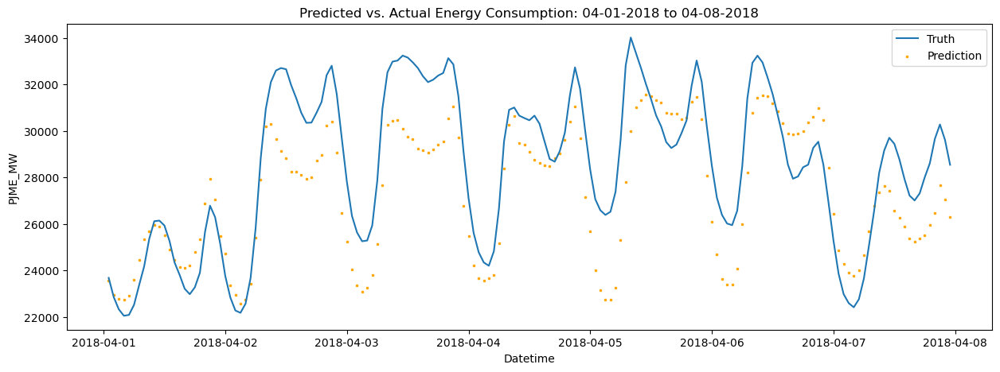
Forecasting the Future
FEATURES = ['dayofyear', 'hour', 'dayofweek', 'quarter', 'month', 'year',
'lag1','lag2','lag3']
TARGET = 'PJME_MW'
X_all = df[FEATURES]
y_all = df[TARGET]model.fit(X_all,
y_all,
eval_set=[(X_all, y_all)],
verbose=100)[0] validation_0-rmse:32403.75596
[100] validation_0-rmse:12426.47572
[200] validation_0-rmse:5752.30602
[300] validation_0-rmse:3971.89168
[400] validation_0-rmse:3571.56955
[500] validation_0-rmse:3455.87507
[600] validation_0-rmse:3402.19853
[700] validation_0-rmse:3365.64606
[800] validation_0-rmse:3334.40208
[900] validation_0-rmse:3308.46216
[999] validation_0-rmse:3283.79395XGBRegressor(base_score=0.5, booster='gbtree', callbacks=None,
colsample_bylevel=None, colsample_bynode=None,
colsample_bytree=None, early_stopping_rounds=50,
enable_categorical=False, eval_metric=None, feature_types=None,
gamma=None, gpu_id=None, grow_policy=None, importance_type=None,
interaction_constraints=None, learning_rate=0.01, max_bin=None,
max_cat_threshold=None, max_cat_to_onehot=None,
max_delta_step=None, max_depth=3, max_leaves=None,
min_child_weight=None, missing=nan, monotone_constraints=None,
n_estimators=1000, n_jobs=None, num_parallel_tree=None,
predictor=None, random_state=None, ...)In a Jupyter environment, please rerun this cell to show the HTML representation or trust the notebook. On GitHub, the HTML representation is unable to render, please try loading this page with nbviewer.org.
XGBRegressor(base_score=0.5, booster='gbtree', callbacks=None,
colsample_bylevel=None, colsample_bynode=None,
colsample_bytree=None, early_stopping_rounds=50,
enable_categorical=False, eval_metric=None, feature_types=None,
gamma=None, gpu_id=None, grow_policy=None, importance_type=None,
interaction_constraints=None, learning_rate=0.01, max_bin=None,
max_cat_threshold=None, max_cat_to_onehot=None,
max_delta_step=None, max_depth=3, max_leaves=None,
min_child_weight=None, missing=nan, monotone_constraints=None,
n_estimators=1000, n_jobs=None, num_parallel_tree=None,
predictor=None, random_state=None, ...)df.index.max()Timestamp('2018-08-03 00:00:00')Create future dates to predict PJME_MW for. We forecast one year beyond the end of the data.
future = pd.date_range('2018-08-03','2019-08-01',freq='1h')
future_df = pd.DataFrame(index=future)
future_df['isFuture'] = True
df['isFuture'] = False
df_and_future = pd.concat([df,future_df])
df_and_future = create_features(df_and_future)
df_and_future = add_lags(df_and_future)df_and_future| PJME_MW | hour | dayofweek | quarter | month | year | dayofyear | lag1 | lag2 | lag3 | prediction | isFuture | |
|---|---|---|---|---|---|---|---|---|---|---|---|---|
| 2002-01-01 01:00:00 | 30393.0 | 1 | 1 | 1 | 1 | 2002 | 1 | NaN | NaN | NaN | NaN | False |
| 2002-01-01 02:00:00 | 29265.0 | 2 | 1 | 1 | 1 | 2002 | 1 | NaN | NaN | NaN | NaN | False |
| 2002-01-01 03:00:00 | 28357.0 | 3 | 1 | 1 | 1 | 2002 | 1 | NaN | NaN | NaN | NaN | False |
| 2002-01-01 04:00:00 | 27899.0 | 4 | 1 | 1 | 1 | 2002 | 1 | NaN | NaN | NaN | NaN | False |
| 2002-01-01 05:00:00 | 28057.0 | 5 | 1 | 1 | 1 | 2002 | 1 | NaN | NaN | NaN | NaN | False |
| ... | ... | ... | ... | ... | ... | ... | ... | ... | ... | ... | ... | ... |
| 2019-07-31 20:00:00 | NaN | 20 | 2 | 3 | 7 | 2019 | 212 | 46912.0 | 39352.0 | 40243.0 | NaN | True |
| 2019-07-31 21:00:00 | NaN | 21 | 2 | 3 | 7 | 2019 | 212 | 45985.0 | 38699.0 | 39183.0 | NaN | True |
| 2019-07-31 22:00:00 | NaN | 22 | 2 | 3 | 7 | 2019 | 212 | 44094.0 | 37346.0 | 37759.0 | NaN | True |
| 2019-07-31 23:00:00 | NaN | 23 | 2 | 3 | 7 | 2019 | 212 | 40666.0 | 34555.0 | 34641.0 | NaN | True |
| 2019-08-01 00:00:00 | NaN | 0 | 3 | 3 | 8 | 2019 | 213 | 37158.0 | 31646.0 | 31470.0 | NaN | True |
154066 rows × 12 columns
future_w_features = df_and_future.query('isFuture').copy()future_w_features| PJME_MW | hour | dayofweek | quarter | month | year | dayofyear | lag1 | lag2 | lag3 | prediction | isFuture | |
|---|---|---|---|---|---|---|---|---|---|---|---|---|
| 2018-08-03 00:00:00 | NaN | 0 | 4 | 3 | 8 | 2018 | 215 | 33539.0 | 32094.0 | 31695.0 | NaN | True |
| 2018-08-03 01:00:00 | NaN | 1 | 4 | 3 | 8 | 2018 | 215 | 30781.0 | 29503.0 | 29128.0 | NaN | True |
| 2018-08-03 02:00:00 | NaN | 2 | 4 | 3 | 8 | 2018 | 215 | 29015.0 | 27712.0 | 27373.0 | NaN | True |
| 2018-08-03 03:00:00 | NaN | 3 | 4 | 3 | 8 | 2018 | 215 | 27884.0 | 26535.0 | 26233.0 | NaN | True |
| 2018-08-03 04:00:00 | NaN | 4 | 4 | 3 | 8 | 2018 | 215 | 27223.0 | 25870.0 | 25643.0 | NaN | True |
| ... | ... | ... | ... | ... | ... | ... | ... | ... | ... | ... | ... | ... |
| 2019-07-31 20:00:00 | NaN | 20 | 2 | 3 | 7 | 2019 | 212 | 46912.0 | 39352.0 | 40243.0 | NaN | True |
| 2019-07-31 21:00:00 | NaN | 21 | 2 | 3 | 7 | 2019 | 212 | 45985.0 | 38699.0 | 39183.0 | NaN | True |
| 2019-07-31 22:00:00 | NaN | 22 | 2 | 3 | 7 | 2019 | 212 | 44094.0 | 37346.0 | 37759.0 | NaN | True |
| 2019-07-31 23:00:00 | NaN | 23 | 2 | 3 | 7 | 2019 | 212 | 40666.0 | 34555.0 | 34641.0 | NaN | True |
| 2019-08-01 00:00:00 | NaN | 0 | 3 | 3 | 8 | 2019 | 213 | 37158.0 | 31646.0 | 31470.0 | NaN | True |
8713 rows × 12 columns
future_w_features['prediction'] = model.predict(future_w_features[FEATURES])future_w_features['prediction']2018-08-03 00:00:00 31290.783203
2018-08-03 01:00:00 29021.386719
2018-08-03 02:00:00 28264.789062
2018-08-03 03:00:00 27622.343750
2018-08-03 04:00:00 27305.328125
...
2019-07-31 20:00:00 42632.207031
2019-07-31 21:00:00 41855.734375
2019-07-31 22:00:00 40528.839844
2019-07-31 23:00:00 37727.152344
2019-08-01 00:00:00 32205.539062
Name: prediction, Length: 8713, dtype: float32future_w_features['prediction'].describe()count 8713.000000
mean 30962.250000
std 5223.142090
min 20941.083984
25% 27205.164062
50% 30601.240234
75% 33895.183594
max 46665.578125
Name: prediction, dtype: float64plt.figure(figsize=(15,8))
sns.lineplot(data=future_w_features['prediction'],
color=color_pal[5],
ms=1,
lw=1)
plt.grid(True)
plt.xlabel('Time')
plt.ylabel('Predicted Energy Consumption (MW)')
plt.title('PJME Energy Consumption, Forecasted with XGBoost')Text(0.5, 1.0, 'PJME Energy Consumption, Forecasted with XGBoost')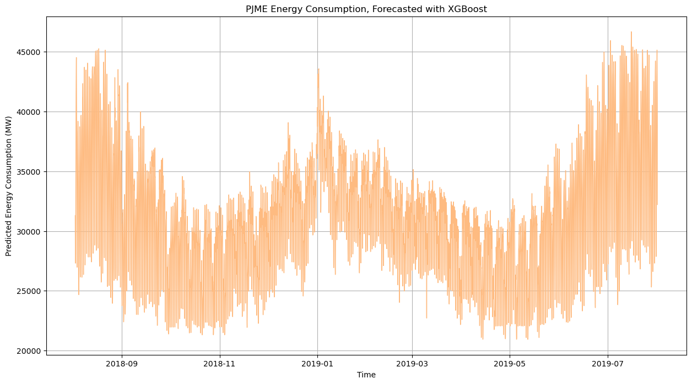